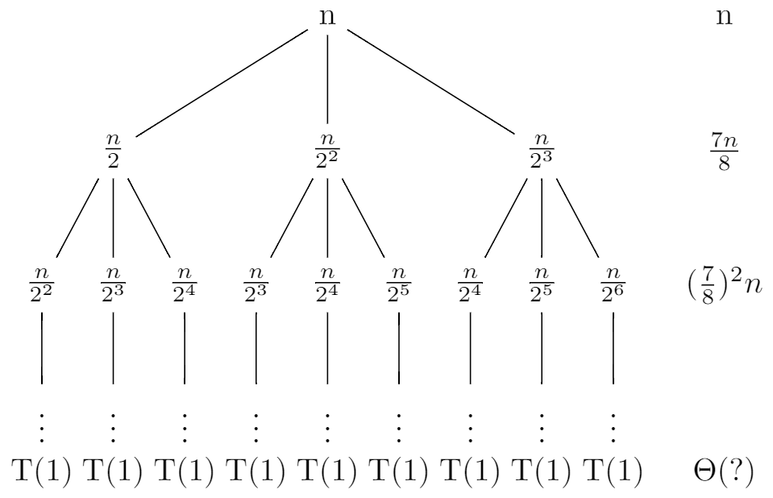

Problems
4-1
a
Here, we have a = 2, b = 2, and $f(n) = \Theta(n^4)$, and thus we have that $n^{\log_ba} = n^{\log_2{2}} = n$. Since $f(n) = \Omega(n^{\log_b{a} + \epsilon})$, where $\epsilon \leq 3$, case 3 applies. And for sufficiently large n, we have that $af(\frac{n}{b}) = 2f(\frac{n}{2}) = \frac{n^4}{8} = cf(n)$, for $c = \frac{1}{8}$. So, the solution to the recurrence is $T(n) = \Theta(n^4)$.
b
Here, we have a = 1, $b = \frac{10}{7}$, and $f(n) = \Theta(n)$, and thus we have that $n^{\log_ba} = n^{\log_{\frac{10}{7}}{1}} = 1$. Since $f(n) = \Omega(n^{\log_b{a} + \epsilon})$, where $\epsilon \leq 1$, case 3 applies. And for sufficiently large n, we have that $af(\frac{n}{b}) = f(\frac{7n}{10}) = \frac{7n}{10} = cf(n)$, for $c = \frac{7}{10}$. So, the solution to the recurrence is $T(n) = \Theta(n)$.
c
Here, we have a = 16, b = 4, and $f(n) = \Theta(n^2)$, and thus we have that $n^{\log_ba} = n^{\log_4{16}} = n^2$. So case 2 applies, so the solution to the recurrence is $T(n) = \Theta(n^2\lg{n})$.
d
Here, we have a = 7, b = 3, and $f(n) = \Theta(n^2)$, and thus we have that $n^{\log_ba} = n^{\log_3{7}}$. Since $f(n) = \Omega(n^{\log_b{a} + \epsilon})$, where $\epsilon \leq 2 - \log_3{7}$, case 3 applies. And for sufficiently large n, we have that $af(\frac{n}{b}) = 7f(\frac{n}{3}) = \frac{7n^2}{9} = cf(n)$, for $c = \frac{7}{9}$. So, the solution to the recurrence is $T(n) = \Theta(n^2)$.
e
Here, we have a = 7, b = 2, and $f(n) = \Theta(n^2)$, and thus we have that $n^{\log_ba} = n^{\log_2{7}} = n^{\lg{7}}$. Since $f(n) = O(n^{\log_b{a} - \epsilon})$, where $\epsilon \leq \lg{\frac{7}{4}}$, case 1 applies. So, the solution to the recurrence is $T(n) = \Theta(n^{\lg7})$.
f
Here, we have a = 2, b = 4, and $f(n) = \Theta(\sqrt{n})$, and thus we have that $n^{\log_ba} = n^{\log_4{2}} = \sqrt{n}$, case 2 applies. So, the solution to the recurrence is $T(n) = \Theta(\sqrt{n}\lg{n})$.
g
First let's create a recursion tree for the recurrence $T(n) = T(n - 2) + n^2$.
The number of nodes at depth i is 1. And each node at depth i, for $i = 0, 1, 2, \ldots, \frac{n - 1}{2} - 1$, has a cost of $(n - 2i)^2$. So the total cost over all nodes at depth i, is $(n - 2i)^2$. The bottom level, at depth $\frac{n - 1}{2}$, has 1 node, which contributing cost T(1), for a total cost of T(1), which is $\Theta(1)$. So:
$$ \begin{eqnarray} T(n) &=& \sum_{i = 0}^{\frac{n - 1}{2} - 1}(n - 2i)^2 + \Theta(1) \\ &=& \sum_{i = 0}^{\frac{n - 1}{2} - 1}(n^2 - 2ni + 4i^2) + \Theta(1) \\ &=& \sum_{i = 0}^{\frac{n - 1}{2} - 1}n^2 - \sum_{i = 0}^{\frac{n - 1}{2} - 1}2ni + \sum_{i = 0}^{\frac{n - 1}{2} - 1}4i^2 + \Theta(1) \\ &=& \frac{n - 1}{2}n^2 - 2n\frac{(\frac{n - 1}{2} - 1)(1 + \frac{n - 1}{2} - 1)}{2} + 4\frac{(\frac{n - 1}{2} - 1)(\frac{n - 1}{2} - 1 + 1)(2(\frac{n - 1}{2} - 1) + 1)}{6} + \Theta(1) \\ &=& \frac{n^2(n - 1)}{2} - \frac{n(n - 1)(n - 3)}{4} + \frac{(n - 1)(n - 2)(n - 3)}{6} + \Theta(1) \\ &=& \frac{5n^3 - 6n^2 + 13n -12}{6} + \Theta(1) \\ &=& \Theta(n^3) \end{eqnarray} $$
Thus, we have derived a guess of $T(n) = \Theta(n^3)$ for our original recurrence. Now let's use the substitution method to verify that our guess was correct. We want to show that $T(n) \geq c_1n^3$ and $T(n) \leq c_2n^3$ for some constants $c_1 > 0$ and $c_2 > 0$. So:
$$ \begin{eqnarray} T(n) &=& T(n - 2) + n^2 \\ &\geq& c_1(n - 2)^3 + n^2 \\ &=& c_1n^3 + (1 - 6c_1)n^2 + 4c_1(3n - 2) \\ &>& c_1n^3 \end{eqnarray} $$
where the last step holds as long as $c_1 \leq \frac{1}{6}$.
So $T(n) = \Omega(n^3)$.
And:
$$ \begin{eqnarray} T(n) &=& T(n - 2) + n^2 \\ &\leq& c_2(n - 2)^3 + n^2 \\ &=& c_2n^3 + n((1 - 6c_2)n + 12c_2) - 8c_2 \\ &\leq& c_2n^3 \end{eqnarray} $$
where the last step holds as long as $c_2 > \frac{1}{6}$ and $n \geq \frac{12c_2}{6c_2 - 1}$.
So $T(n) = O(n^3)$, thus $T(n) = \Theta(n^3)$.
4-2
a
Here is the pseudocode of recursive binary search algorithm:
RECURSIVE-BINARY-SEARCH(A, v, low, high)
if low <= high
middle = (low + high) / 2
if A[middle] < v
return RECURSIVE-BINARY-SEARCH(A, v, middle + 1, high)
else if A[middle] > v
return RECURSIVE-BINARY-SEARCH(A, v, low, middle - 1)
else
return middle
return NIL
An array is passed by pointer
Before it halves the problem size, it needs to do some operations like comparing low and high, calculating middle. But they are constant operations, we can let it be $\Theta(1)$.
So $T(n) = T(\frac{n}{2}) + \Theta(1)$. Here, we have a = 1, b = 2, and $f(n) = \Theta(1)$, and thus we have that $n^{\log_ba} = n^{\log_2{1}} = 1$. So case 2 applies, thus $T(n) = \Theta(n^{\log_ba}\lg{n}) = \Theta(\lg{n}) = \Theta(\lg{N})$.
An array is passed by copying
Each time it halves the problem size, it needs additional $\Theta(N)$ operation to copy the array. So:
$$ \begin{eqnarray} T(n) &=& T(\frac{n}{2}) + \Theta(N) + \Theta(1) \\ &=& T(\frac{n}{2}) + \Theta(N) \\ &=& T(\frac{n}{4}) + \Theta(N) + \Theta(N) \\ &=& \ldots = T(1) + \lg{n}\Theta(N) \\ &=& \Theta(N\lg{N}) \end{eqnarray} $$.
An array is passed by range
Each time it halves the problem size, it needs additional $\Theta(n)$ operation to copy the array. So $T(n) = T(\frac{n}{2}) + \Theta(n) + \Theta(1) = T(\frac{n}{2}) + \Theta(n)$.
Here, we have a = 1, b = 2, and $f(n) = \Theta(n)$, and thus we have that $n^{\log_ba} = n^{\log_2{1}} = 1$. Since $f(n) = \Omega(n^{\log_b{a} + \epsilon})$, where $\epsilon \leq 1$, case 3 applies. And for sufficiently large n, we have that $af(\frac{n}{b}) = f(\frac{n}{2}) = \Theta(\frac{n}{2}) = c\Theta(n)$, for $c = \frac{1}{2}$. So, the solution to the recurrence is $T(n) = \Theta(n) = \Theta(N)$.
b
Here is the pseudocode of merge sor algorithm:
MERGE-SORT(A, p, r)
if p < r
q = (p + r) / 2
MERGE-SORT(A, p ,q)
MERGE-SORT(A, q + 1, r)
MERGE(A, p, q, r)
An array is passed by pointer
We already know the solution that $T(n) = \Theta(n\lg{n}) = \Theta(N\lg{N})$.
An array is passed by copying
From the pseudocode we know it needs to pass the array 3 times to subroutine. So we have $T(n) = 2T(\frac{n}{2}) + \Theta(n) + 3\Theta(N) = 2T(\frac{n}{2}) + \Theta(n) + \Theta(N)$. Let's use the iterative method to solve it:
$$ \begin{eqnarray} T(n) &=& 2T(\frac{n}{2}) + \Theta(n) + \Theta(N) \\ &=& 2(2T(\frac{n}{4}) + \Theta(\frac{n}{2}) + \Theta(N)) + \Theta(n) + \Theta(N) \\ &=& 4T(\frac{n}{4}) + 2\Theta(\frac{n}{2}) + 2\Theta(N) + \Theta(n) + \Theta(N) \\ &=& 4T(\frac{n}{4}) + 2\Theta(n) + 3\Theta(N) \\ &=& \ldots \\ &=& 2^iT(\frac{n}{2^i}) + i\Theta(n) + (1 + 2 + \ldots + 2^{i - 1})\Theta(N) \text{ for } i = 1, 2, \ldots, \lg{n} \\ &=& 2^{\lg{n}}T(1) + \lg{n}\Theta(n) + \Theta(N)\frac{1 - 2^{\lg{n}}}{1 - 2} \\ &=& nT(1) + \Theta(n\lg{n}) + \Theta(Nn) \\ &=& \Theta(N^2) \end{eqnarray} $$
An array is passed by range
It needs additional $3\Theta(n)$ to copy the array. So $T(n) = 2T(\frac{n}{2}) + \Theta(n) + 3\Theta(n) = 2T(\frac{n}{2}) + \Theta(n) = \Theta(n\lg{n}) = \Theta(N\lg{N})$.
4-3
a
Here, we have a = 4, b = 3, and $f(n) = \Theta(n\lg{n})$, and thus we have that $n^{\log_ba} = n^{\log_3{4}}$.
In problems 3-2-a, we proved that $\lg^k{n} = O(n^\epsilon)$ for $k \geq 1$ and $\epsilon > 0$, so $\lg{n} = O(n^{\epsilon})$. Since $\log_3{4} \approx 1.2618595071429148$, so $f(n) = O(n^{\log_ba - \epsilon})$ for $\epsilon \leq 0.26$. So case 1 applies, the solution to the recurrence is $T(n) = \Theta(n^{\log_34})$.
b
Here, we have a = 3, b = 3, and $f(n) = \Theta(\frac{n}{\lg{n}})$, and thus we have that $n^{\log_ba} = n^{\log_3{3}} = n$. So $f(n) = O(n^{\log_ba})$. But it's not that easy to prove that $f(n) = O(n^{\log_ba - \epsilon})$.
Let's solve it by iterative method:
$$ \begin{eqnarray} T(n) &=& 3T(\frac{n}{3}) + \frac{n}{\lg{n}} \\ &=& 3(3T(\frac{n}{9}) + \frac{\frac{n}{3}}{\lg{\frac{n}{3}}}) + \frac{n}{\lg{n}} \\ &=& 9T(\frac{n}{9}) + \frac{n}{\lg{n} - \lg3} + \frac{n}{\lg{n}} \\ &=& \ldots \\ &=& 3^iT(\frac{n}{3^i}) + \sum_{i = 1}^{\log_3{n}}\frac{n}{\lg{n} - (i - 1)\lg3} \\ &=& nT(1) + \sum_{i = 1}^{\log_3{n}}\frac{n}{\lg{n} - (i - 1)\lg3} \\ &=& nT(1) + \sum_{i = 0}^{\log_3{n} - 1}\frac{n}{\lg{n} - i\lg3} \\ &=& nT(1) + \sum_{i = 0}^{\log_3{n} - 1}\frac{n}{\frac{\log_3{n}}{\log_3{2}} - i\frac{\log_3{3}}{\log_3{2}}} \\ &=& nT(1) + \log_3{2}\sum_{i = 0}^{\log_3{n} - 1}\frac{n}{\log_3{n} - i} \\ &=& nT(1) + \log_3{2}\sum_{i = 1}^{\log_3{n}}\frac{n}{i} \\ &=& nT(1) + \log_3{2}(n(\ln{\log_3{n}} + O(1))) \text{ by equation (A.7)} \\ &=& \Theta(n\lg{\lg{n}}) \end{eqnarray} $$
Thus, we have derived a guess of $T(n) = \Theta(n\lg{\lg{n}})$ for our original recurrence. Now let's use the substitution method to verify that our guess was correct. We want to show that $T(n) \geq c_1n\lg{\lg{n}}$ and $T(n) \leq c_2n\lg{\lg{n}}$ for some constants $c_1 > 0$ and $c_2 > 0$. So:
$$ \begin{eqnarray} T(n) &=& 3T(\frac{n}{3}) + \frac{n}{\lg{n}} \\ &\leq& 3(c_2\frac{n}{3}\lg{\lg{\frac{n}{3}}}) + \frac{n}{\lg{n}} \\ &=& c_2n\lg{(\lg{n} - \lg3)} + \frac{n}{\lg{n}} \end{eqnarray} $$
It's not that easy to prove that $T(n) \leq c_2n\lg{\lg{n}}$, let's guess $T(n) \leq c_2n\lg{\lg{n}} - \frac{n}{\lg{3n}}$.
$$ \begin{eqnarray} T(n) &=& 3T(\frac{n}{3}) + \frac{n}{\lg{n}} \\ &\leq& 3(c_2\frac{n}{3}\lg{\lg{\frac{n}{3}}} - \frac{\frac{n}{3}}{\lg{3\frac{n}{3}}}) + \frac{n}{\lg{n}} \\ &=& c_2n\lg{(\lg{n} - \lg3)} - \frac{n}{\lg{n}} + \frac{n}{\lg{n}} \\ &<& c_2n\lg{\lg{n}} \end{eqnarray} $$
So $T(n) = O(n\lg{\lg{n}})$. And:
$$ \begin{eqnarray} T(n) &=& 3T(\frac{n}{3}) + \frac{n}{\lg{n}} \\ &\geq& 3(c_1\frac{n}{3}\lg{\lg{\frac{n}{3}}}) + \frac{n}{\lg{n}} \\ &=& c_1n\lg{(\lg{n} - \lg3)} + \frac{n}{\lg{n}} \end{eqnarray} $$
Let's reguess $T(n) \geq c_1n\lg{\lg{3n}}$. So:
$$ \begin{eqnarray} T(n) &=& 3T(\frac{n}{3}) + \frac{n}{\lg{n}} \\ &\geq& 3(c_1\frac{n}{3}\lg{\lg{3\frac{n}{3}}}) + \frac{n}{\lg{n}} \\ &=& c_1n\lg{\lg{n}} + \frac{n}{\lg{n}} \\ &>& c_1n\lg{\lg{n}} \end{eqnarray} $$
So $T(n) = \Omega(n\lg{\lg{n}})$. Thus = $T(n) \ Theta(n\lg{\lg{n}})$.
c
Here, we have a = 4, b = 2, and $f(n) = \Theta(n^2\sqrt{n})$, and thus we have that $n^{\log_ba} = n^{\log_4{2}} = \sqrt{n}$. So $f(n) = \Omega(n^{\log_ba + \epsilon})$ for $\epsilon \leq 2$. case 3 applies. And for sufficiently large n, we have that $af(\frac{n}{b}) = 4f(\frac{n}{2}) = \frac{\sqrt{2}}{2}n^2\sqrt{n} = cf(n)$, for $c = \frac{\sqrt{2}}{2}$. So, the solution to the recurrence is $T(n) = \Theta(n^2\sqrt{n})$.
d
If n is large enough, then we can ignore the -2. Then we can solve it by the master method. So we have a = 3, b = 3, and $f(n) = \Theta(n)$, and thus we have that $n^{\log_ba} = n^{\log_3{3}} = n$. Case 2 applies, thus the solution to the recurrence is $T(n) = \Theta(n^{\log_ba}\lg{n}) = \Theta(n\lg{n})$.
e
Let's try to solve a general form of the recurrence $T(n) = aT(\frac{n}{a}) + \frac{n}{\lg{n}}, a > 1$.
$$ \begin{eqnarray} T(n) &=& aT(\frac{n}{a}) + \frac{n}{\lg{n}} \\ &=& a(aT(\frac{n}{a^2}) + \frac{\frac{n}{a}}{\lg{\frac{n}{a}}}) + \frac{n}{\lg{n}} \\ &=& a^2T(\frac{n}{a^2}) + \frac{n}{\lg{n} - \lg{a}} + \frac{n}{\lg{n}} \\ &=& \ldots \\ &=& a^iT(\frac{n}{a^i}) + \sum_{i = 1}^{\log_a{n}}\frac{n}{\lg{n} - (i - 1)\lg{a}} \\ &=& nT(1) + \sum_{i = 1}^{\log_a{n}}\frac{n}{\lg{n} - (i - 1)\lg{a}} \\ &=& nT(1) + \sum_{i = 0}^{\log_a{n} - 1}\frac{n}{\lg{n} - i\lg{a}} \\ &=& nT(1) + \sum_{i = 0}^{\log_a{n} - 1}\frac{n}{\frac{\log_a{n}}{\log_a{2}} - i\frac{\log_a{a}}{\log_a{2}}} \\ &=& nT(1) + \log_a{2}\sum_{i = 0}^{\log_a{n} - 1}\frac{n}{\log_a{n} - i} \\ &=& nT(1) + \log_a{2}\sum_{i = 1}^{\log_a{n}}\frac{n}{i} \\ &=& nT(1) + \log_a{2}(n(\ln{\log_a{n}} + O(1))) \text{ by equation (A.7)} \\ &=& \Theta(n\lg{\lg{n}}) \end{eqnarray} $$
Thus, we have derived a guess of $T(n) = \Theta(n\lg{\lg{n}})$ for our original recurrence. Now let's use the substitution method to verify that our guess was correct. We want to show that $T(n) \geq c_1n\lg{\lg{n}}$ and $T(n) \leq c_2n\lg{\lg{n}}$ for some constants $c_1 > 0$ and $c_2 > 0$. Like the problem b, let's guess $T(n) \geq c_1n\lg{\lg{an}}$ and $T(n) \leq c_2n\lg{\lg{n}} - \frac{n}{\lg{an}}$.
$$ \begin{eqnarray} T(n) &=& aT(\frac{n}{a}) + \frac{n}{\lg{n}} \\ &\leq& a(c_2\frac{n}{a}\lg{\lg{\frac{n}{a}}} - \frac{\frac{n}{a}}{\lg{a\frac{n}{a}}}) + \frac{n}{\lg{n}} \\ &=& c_2n\lg{(\lg{n} - \lg{a})} - \frac{n}{\lg{n}} + \frac{n}{\lg{n}} \\ &<& c_2n\lg{\lg{n}} \end{eqnarray} $$
So $T(n) = O(n\lg{\lg{n}})$. And:
$$ \begin{eqnarray} T(n) &=& aT(\frac{n}{a}) + \frac{n}{\lg{n}} \\ &\geq& a(c_1\frac{n}{a}\lg{\lg{a\frac{n}{a}}}) + \frac{n}{\lg{n}} \\ &=& c_1n\lg{\lg{n}} + \frac{n}{\lg{n}} \\ &>& c_1n\lg{\lg{n}} \end{eqnarray} $$
So $T(n) = \Omega(n\lg{\lg{n}})$. Thus = $T(n) = \Theta(n\lg{\lg{n}})$.
The solution to recurrence $T(n) = 2T(\frac{n}{2}) + \frac{n}{\lg{n}}$ is $\Theta(n\lg{\lg{n}})$.
f
First let's create a recursion tree for the recurrence $T(n) = T(\frac{n}{2}) + T(\frac{n}{4}) + T(\frac{n}{8}) + n$ and assume that n is an exact power of 8.

We've solved similar problems before. Not all branch reaches at the bottom at the same time. The right most branch reaches at the bottom first. The left most branch is the last one that reaches at the bottom.
And we can see the total cost over all nodes at depth i is $(\frac{7}{8})^in$.
If the left most branch reaches at the bottom, and assume the current depth is k, then we assume other branches reach at depth k - 1 at the same time. So we have:
$$ \begin{eqnarray} T(n) &\leq& \sum_{i = 0}^{\lg{n} - 1}(\frac{7}{8})^in + T(1) \\ &=& n\frac{1 - (\frac{7}{8})^{\lg{n}}}{1 - \frac{7}{8}} + T(1) \\ &=& 8n(1 - (\frac{7}{8})^{\lg{n}}) + T(1) \\ &<& 8n + T(1) \\ &\leq& 9n \\ &=& O(n) \end{eqnarray} $$
where the last step holds as long as $n \geq T(1)$.
Then if the right most branch reaches at the bottom, other branches have not reach at the bottom. But we assume they also reach at the bottom. So we have:
$$ \begin{eqnarray} T(n) &\geq& \sum_{i = 0}^{\log_8{n} - 1}(\frac{7}{8})^in + (\frac{7}{8})^{\log_8{n}}n \\ &=& n\frac{1 - (\frac{7}{8})^{\log_8{n} + 1}}{1 - \frac{7}{8}} \\ &=& 8n(1 - (\frac{7}{8})^{\log_8{n} + 1}) \\ &\geq& 8n(1 - (\frac{7}{8})^{\log_8{1} + 1}) \\ &=& n \\ &=& \Omega(n) \end{eqnarray} $$
Thus we devird a guess of $T(n) = \Theta(n)$ for our original recurrence. Now let's use the substitution method to verify that our guess was correct. We want to show that $T(n) \geq c_1n$ and $T(n) \leq c_2n$ for some constants $c_1 > 0$ and $c_2 > 0$. So:
$$ \begin{eqnarray} T(n) &=& T(\frac{n}{2}) + T(\frac{n}{4}) + T(\frac{n}{8}) + n \\ &\geq& c_1\frac{n}{2} + c_1\frac{n}{4} + c_1\frac{n}{8} + n \\ &=& (1 + \frac{7}{8}c_1)n \\ &\geq& c_1n \\ &=& \Omega(n) \end{eqnarray} $$
where the last step holds as long as $c_1 \leq 8$.
And:
$$ \begin{eqnarray} T(n) &=& T(\frac{n}{2}) + T(\frac{n}{4}) + T(\frac{n}{8}) + n \\ &\leq& c_2\frac{n}{2} + c_2\frac{n}{4} + c_2\frac{n}{8} + n \\ &=& (1 + \frac{7}{8}c_2)n \\ &\leq& c_2n \\ &=& O(n) \end{eqnarray} $$
where the last step holds as long as $c_2 \geq 8$.
Thus $T(n) = \Theta(n)$.
g
First let's create a recursion tree for the recurrence $T(n) = T(n - 1) + \frac{1}{n}$.

The number of nodes at depth i is 1, for $i = 0, 1, 2, \ldots, n - 2$, has a cost of $\frac{1}{n - i}$. The bottom level, at depth n - 1, has 1 node, which contribution cost T(1), for a total cost of T(1), which is $\Theta(1)$. So:
$$ \begin{eqnarray} T(n) &=& \sum_{i = 0}^{n - 2}\frac{1}{n - i} + \Theta(1) \\ &=& \sum_{i = 2}^{n}\frac{1}{i} + \Theta(1) \\ &=& \ln{n} - 1 + \Theta(1) \\ &=& \Theta(n) \end{eqnarray} $$
Thus, we have derived a guess of $T(n) = T(n - 1) + \frac{1}{n}$ for original recurrence. Now let's use the substitution method to verify that our guess was correct. We want to show that $T(n) \geq c_1\lg{n}$ and $T(n) \leq c_2\lg{n}$ for some constants $c_1 > 0$ and $c_2 > 0$. So:
$$ \begin{eqnarray} T(n) &\geq& c_1\lg{(n - 1)} + \frac{1}{n} \end{eqnarray} $$
It's not obvious to see that $T(n) \geq c_1\lg{n}$. Let's try to guess $T(n) \geq c_1\lg{(n + 1)}$. So:
$$ \begin{eqnarray} T(n) &\geq& c_1\lg{(n - 1 + 1)} + \frac{1}{n} \\ &=& c_1\lg{n} + \frac{1}{n} \\ &>& c_1\lg{n} \\ &=& \Omega(\lg{n}) \end{eqnarray} $$
So $T(n) = \Omega(\lg{n})$. And:
$$ \begin{eqnarray} T(n) &\leq& c_2\lg{(n - 1)} + \frac{1}{n} \end{eqnarray} $$
Let's try to reguess $T(n) \leq c_2\lg{n} - \frac{1}{n + 1}$. So:
$$ \begin{eqnarray} T(n) &\leq& c_2\lg{(n - 1)} - \frac{1}{n - 1 + 1} + \frac{1}{n} \\ &=& c_2\lg{(n - 1)} \\ &<& c_2\lg{n} \\ &=& O(\lg{n}) \end{eqnarray} $$
So $T(n) = O(\lg{n})$, thus $T(n) = \Theta(\lg{n})$.
h
First let's create a recursion tree for the recurrence $T(n) = T(n - 1) + \lg{n}$.

The number of nodes at depth i is 1, for $i = 0, 1, 2, \ldots, n - 2$, has a cost of $\lg({n - i})$. The bottom level, at depth n - 1, has 1 node, which contribution cost T(1), for a total cost of T(1), which is $\Theta(1)$. So:
$$ \begin{eqnarray} T(n) &=& \sum_{i = 0}^{n - 2}\lg{(n - i)} + \Theta(1) \\ &=& \sum_{i = 2}^{n}\lg{n} + \Theta(1) \\ &=& \lg{(n!)} + \Theta(1) \\ &=& \Theta(n\lg{n}) \text{ (we have proved it in 3.2-3)} \end{eqnarray} $$
Thus, we have derived a guess of $T(n) = T(n - 1) + \lg{n}$ for original recurrence. Now let's use the substitution method to verify that our guess was correct. We want to show that $T(n) \geq c_1n\lg{n}$ and $T(n) \leq c_2n\lg{n}$ for some constants $c_1 > 0$ and $c_2 > 0$. So:
$$ \begin{eqnarray} T(n) &\geq& c_1(n - 1)\lg{(n - 1)} + \lg{n} \end{eqnarray} $$
Let's try to reguess $T(n) \geq c_1(n + 1)\lg{(n + 1)}$. So:
$$ \begin{eqnarray} T(n) &\geq& c_1(n - 1 + 1)\lg{(n - 1 + 1)} + \lg{n} \\ &=& c_1n\lg{n} + \lg{n} \\ &>& c_1n\lg{n} \\ &=& \Omega(n\lg{n}) \end{eqnarray} $$
So $T(n) = \Omega(n\lg{n})$. And:
$$ \begin{eqnarray} T(n) &\leq& c_2(n - 1)\lg{(n - 1)} + \lg{n} \\ &<& c_2(n - 1)\lg{n} + \lg{n} \\ &=& \lg{n}(c_2(n - 1) + 1) \\ &\leq& c_2n\lg{n} \\ &=& O(n\lg{n}) \end{eqnarray} $$
where the last step holds as long as $c_2 \geq 1$.
So $T(n) = O(n\lg{n})$. Thus $T(n) = \Theta(n\lg{n})$.
i
First let's create a recursion tree for the recurrence $T(n) = T(n - 2) + \frac{1}{\lg{n}}$.

The number of nodes at depth i is 1, for $i = 0, 1, 2, \ldots, \lg{(n - 1)} - 1$, has a cost of $\frac{1}{\lg{(n - 2^i)}}$. The bottom level, at depth $\lg{(n - 1)}$, has 1 node, which contribution cost T(1), for a total cost of T(1), which is $\Theta(1)$. So:
$$ \begin{eqnarray} T(n) &=& \sum_{i = 0}^{\lg{(n - 1)} - 1}\frac{1}{\lg{(n - 2^i)}} + \Theta(1) \end{eqnarray} $$
But I don't know how to compute the sum.
j
Let's solve it by the iterative method and assume n is an exact power of 2, and n is also a perfect square.
$$ \begin{eqnarray} T(n) &=& \sqrt{n}T(\sqrt{n}) + n \\ &=& n^{\frac{1}{2}}T(n^{\frac{1}{2}}) + n \\ &=& n^{\frac{1}{2}}((n^{\frac{1}{2}})^{\frac{1}{2}}T((n^{\frac{1}{2}})^{\frac{1}{2}}) + n^{\frac{1}{2}}) + n \\ &=& n^{\frac{1}{2}}(n^{\frac{1}{4}}T(n^{\frac{1}{4}}) + n^{\frac{1}{2}}) + n \\ &=& n^{\frac{1}{2} + \frac{1}{4}}T(n^{\frac{1}{4}}) + n^{\frac{1}{2} + \frac{1}{2}} + n \\ &=& n^{\frac{1}{2} + \frac{1}{4}}(n^{\frac{1}{8}}T(n^{\frac{1}{8}}) + n^{\frac{1}{4}}) + n^{\frac{1}{2} + \frac{1}{2}} + n \\ &=& n^{\frac{1}{2} + \frac{1}{4} + \frac{1}{8}}T(n^{\frac{1}{8}}) + n^{\frac{1}{2} + \frac{1}{4} + \frac{1}{4}} + n^{\frac{1}{2} + \frac{1}{2}} + n \\ &=& \ldots \\ &=& n^{\sum_{i = 1}^{\lg{\sqrt{n}}}\frac{1}{2^i}}T(2) + \lg{\sqrt{n}} * n \\ &<& n^{\sum_{i = 1}^{\infty}\frac{1}{2^i}}T(2) + \lg{\sqrt{n}} * n \\ &=& n^{\frac{\frac{1}{2}}{1 - \frac{1}{2}}}T(2) + \frac{1}{2}n\lg{n} \\ &=& nT(2) + \frac{1}{2}n\lg{n} \\ &=& O(n\lg{n}) \end{eqnarray} $$
Thus, we have derived a guess of $T(n) = O(n\lg{n})$ for original recurrence. Now let's use the substitution method to verify that our guess was correct. We want to show that $T(n) \leq cn\lg{n}$ for some constant c > 0. So:
$$ \begin{eqnarray} T(n) &=& \sqrt{n}T(\sqrt{n}) + n \\ &\leq& \sqrt{n}c\sqrt{n}\lg{\sqrt{n}} + n \\ &=& cn\lg{\sqrt{n}} + n \\ &=& \frac{1}{2}cn\lg{n} + n \end{eqnarray} $$
Because $\frac{1}{2}cn\lg{n} + n - cn\lg{n} = n(1 - \frac{1}{2}c\lg{n}) \leq n(1 - \frac{1}{2}c)$ when $n \geq 2$. So $n(1 - \frac{1}{2}c) \leq 0$ when $c \geq 2$. So $T(n) \leq cn\lg{n}$ when $c \geq 2$ and $n \geq 2$. Thus, $T(n) = O(n\lg{n})$.
But I don't know how to get the lower bound.
4-4
a
$$ \begin{eqnarray} z + z\mathcal{F}(z) + z^2\mathcal{F}(Z) &=& z + z\sum_{i = 0}^{\infty}F_iz^i + z^2\sum_{i = 0}^{\infty}F_iz^i \\ &=& z + (0 + z^2 + z^3 + 2z^4 + 3z^5 + \ldots) + (0 + z^3 + z^4 + 2z^5 + \ldots) \\ &=& 0 + z + z^2 + 2z^3 + 3z^4 + 5z^5 + \ldots \\ &=& \mathcal{F}(z) \end{eqnarray} $$
b
Because $\mathcal{F}(z) = z + z\mathcal{F}(z) + z^2\mathcal{F}(z)$, so $\mathcal{F}(z) - z\mathcal{F}(z) - z^2\mathcal{F}(z) = z$, thus $\mathcal{F}(z)(1 - z - z^2) = z$, so $\mathcal{F}(z) = \frac{z}{1 - z - z^2}$.
And:
$$ \begin{eqnarray} \frac{z}{(1 - \phi{z})(1 - \hat\phi{z})} &=& \frac{z}{1 - (\phi + \hat\phi)z + \phi\hat\phi{z^2}} \\ &=& \frac{z}{1 - (\frac{1 - \sqrt{5}}{2} + \frac{1 + \sqrt{5}}{2})z + \frac{1 - \sqrt{5}}{2}\frac{1 + \sqrt{5}}{2}z^2} \\ &=& \frac{z}{1 - z - z^2} \end{eqnarray} $$
And:
$$ \begin{eqnarray} \frac{1}{\sqrt{5}}(\frac{1}{1 - \phi{z}} - \frac{1}{1 - \hat\phi{z}}) &=& \frac{1}{\sqrt{5}}\frac{1 - \hat\phi{z} - 1 + \phi{z}}{(1 - \phi{z})(1 - \hat\phi{z})} \\ &=& \frac{1}{\sqrt{5}}\frac{z(\phi - \hat\phi)}{(1 - \phi{z})(1 - \hat\phi{z})} \\ &=& \frac{1}{\sqrt{5}}\frac{z(\frac{1 + \sqrt{5}}{2} - \frac{1 - \sqrt{5}}{2})}{(1 - \phi{z})(1 - \hat\phi{z})} \\ &=& \frac{1}{\sqrt{5}}\frac{z\sqrt{5}}{(1 - \phi{z})(1 - \hat\phi{z})} \\ &=& \frac{z}{(1 - \phi{z})(1 - \hat\phi{z})} \end{eqnarray} $$
c
$$ \begin{eqnarray} \sum_{i = 0}^{\infty}\frac{1}{\sqrt{5}}(\phi^i - \hat\phi^i)z^i &=& \frac{1}{\sqrt{5}}\sum_{i = 0}^{\infty}(\phi^iz^i - \hat\phi^iz^i) \\ &=& \frac{1}{\sqrt{5}}(\sum_{i = 0}^{\infty}\phi^iz^i - \sum_{i = 0}^{\infty}\hat\phi^iz^i) \\ &=& \frac{1}{\sqrt{5}}(\frac{1}{1 - \phi{z}} - \frac{1}{1 - \hat\phi{z}}) \\ &=& \mathcal{F}(z) \end{eqnarray} $$
d
Because $\mathcal{F}(z) = \sum_{i = 0}^{\infty}F_iz^i$ and $\mathcal{F}(z) = \sum_{i = 0}^{\infty}\frac{1}{\sqrt{5}}(\phi^i - \hat\phi^i)z^i$, so we have $F_i = \frac{1}{\sqrt{5}}(\phi^i - \hat\phi^i)$. Since $|\hat\phi| < 1$, we have $\frac{|\hat\phi^i|}{\sqrt{5}} < \frac{1}{\sqrt{5}} < \frac{1}{2}$, which implies that $F_i = \lfloor \frac{\phi^i}{\sqrt{5}} + \frac{1}{2} \rfloor$, which is to say that the ith Fibonacci number $F_i$ is equal to $\frac{\phi^i}{\sqrt{5}}$ rounded to the nearest integer.
4-5
a
4-6
a
The "only if" part is easy. If an array is Monge, then for all i, j, k and l such that $l \leq i < k \leq m$ and $l \leq j < l \leq n$ we have $A[i, j] + A[k, l] \leq A[i, l] + A[k, j]$. So we let k = i + 1, l = j + 1, then we have $A[i, j] + A[i + 1, j + 1] \leq A[i, j + 1] + A[i + 1, j]$. So we proved the "only if" part.
Then let's prove the "if" part, we'll use induction separately on rows and columns. Let's get on columns first. The base case is already given, let's assume $A[i, j] + A[i + 1, j + k] \leq A[i, j + k] + A[i + 1, j]$ for $k \geq 1$ and $j + k \leq n$. Then we need to prove $A[i, j] + A[i + 1, j + k + 1] \leq A[i, j + k + 1] + A[i + 1, j]$.
According to the definition, we have $A[i, j + k] + A[i + 1, j + k + 1] \leq A[i, j + k + 1] + A[i + 1, j + k]$, thus: $$\begin{aligned} A[i, j] + A[i + 1, j + k] + A[i, j + k] + A[i + 1, j + k + 1] \leq & A[i, j + k] + A[i + 1, j] + \\ & A[i, j + k + 1] + A[i + 1, j + k] \end{aligned}$$ So we get $A[i, j] + A[i + 1, j + k + 1] \leq A[i, j + k + 1] + A[i + 1, j]$.
So the induction is correct, and similarly we can prove: $$ \begin{eqnarray} A[i, j + 1] + A[i + 1, j + k] &\leq& A[i, j + k] + A[i + 1, j + 1] \, (j + k \leq n), \ldots, A[i, j + p] + A[i + 1, j + k] \\ &\leq& A[i, j + k] + A[i + 1, j + p] \, (j + p \leq j + k - 1, j + k \leq n) \end{eqnarray} $$ thus we can see that all adjacent rows are Monge arrays. Similarly, we can use the induction on rows, so all adjacent columns are Monge arrays.
For any $m_1 x n_1$ array, if $m_1 = 2$ or $n_1 = 2$, then the subarray is a Monge array. And we need to prove the subarray is also a Monge array if $m_1 \geq 3$ and $n_1 \geq 3$.
Let's assume the subarray starts at row $A[i_1, j_1]$ and ends at $A[i_2, j_2]$. Since any adjacent columns are Monge arrays, so we have:
$$A[i_1, j_1] + A[i_2, j_1 + 1] \leq A[i_1, j_1 + 1] + A[i_2, j_1]$$ $$A[i_1, j_1 + 1] + A[i_2, j_1 + 2] \leq A[i_1, j_1 + 2] + A[i_2, j_1 + 1]$$ $$\ldots$$ $$A[i_1, j_2 - 1] + A[i_2, j_2] \leq A[i_1, j_2] + A[i_2, j_2 - 1]$$
Then we sum all inequations together, so we have:
$$A[i_1, j_1] + A[i_2, j_2] \leq A[i_1, j_2] + A[i_2, j_1]$$, which means the subarray $A[i_1, j_1]$ to $A[i_2, j_2]$ is a Monge array when $i_2 - i_1 \geq 3$ and $j_2 - j_1 \geq 3$. So for all subarrays in A, they are Monge arrays. So we proved the "if" part.
b
\begin{matrix} 37 & 23 & 22 & 32 \\ 21 & 6 & 5 & 10 \\ 53 & 34 & 30 & 31 \\ 32 & 13 & 9 & 6 \\ 43 & 21 & 15 & 8 \\ \end{matrix}
c
Let's consider row i and row i + 1. Let $f(i) = j_1$ and $f(i + 1) = j_2$ and assume $f(i) > f(i + 1)$, so we have $j_1 > j_2$. Since A is a Monge array, so we have $A[i, j_2] + A[i + 1, j_1] \leq A[i, j_1] + A[i + 1, j_2]$. But according to the definition of f(i), we have $A[i, j_2] > A[i, j_1]$ and $A[i + 1, j_2] < A[i + 1, j_1]$, combine them together: $A[i, j_2] + A[i + 1, j_1] > A[i, j_1] + A[i + 1, j_2]$. Thus the assumption is wrong. So $f(i) \leq f(i + 1)$. So $f(1) \leq f(2) \leq \ldots \leq f(m)$ for any m x n Monge array.
d
Let's assume $m = 2k, k = 1, 2, \ldots$, from the previous question we have $f(2k - 2) \leq f(2k - 1) \leq f(2k)$. We want to get f(2k - 1) when f(2k - 2) and f(2k) are already known. We only need to compare the numbers from A[2k - 1][f(2k - 2)] to A[2k - 1][f(2k)], which costs at most $O(f(2k) - f(2k - 2) + 1)$. Thus:
$$ \begin{eqnarray} T &=& \sum_{k = 1}^{\frac{m}{2}}O(f(2k) - f(2k - 2) + 1) \\ &=& (f(2) - f(0) + 1) + (f(4) - f(2) + 1) + \ldots + (f(m) - f(m - 2) + 1) \\ &=& f(m) - f(0) + \frac{m}{2} \\ &\leq& n - 0 + \frac{m}{2} \\ &<& n + m \\ &=& O(m + n) \end{eqnarray} $$
e
$$ \begin{eqnarray} T(m) &=& T(\frac{m}{2}) + O(m + n) \\ &=& T(\frac{m}{4}) + O(\frac{m}{2} + n) + O(m + n) \\ &=& T(\frac{m}{8}) + O(\frac{m}{4} + n) + O(\frac{m}{2} + n) + O(m + n) \\ &=& \ldots \\ &=& T(1) + \sum_{i = 0}^{\lg{m} - 1}O(\frac{m}{2^i}) + \sum_{i = 0}^{\lg{m} - 1}O(n) \\ &<& T(1) + \sum_{i = 0}^{\infty}O(\frac{m}{2^i}) + \sum_{i = 0}^{\lg{m} - 1}O(n) \\ &=& T(1) + O(m\frac{1}{1 - \frac{1}{2}}) + O(n\lg{m}) \\ &=& O(1) + O(2m) + O(n\lg{m}) \\ &=& O(m + n\lg{m}) \end{eqnarray} $$
def leftmost_min_element_in_each_row_of_monge_array(matrix):
# Column index of leftmost min element in each row
leftmost_min_element_in_each_row = [0] * len(matrix)
leftmost_min_element_divide_and_conquer(
matrix, leftmost_min_element_in_each_row, 0, len(matrix) - 1, 1)
return leftmost_min_element_in_each_row
def leftmost_min_element_divide_and_conquer(
matrix, leftmost_min_element_in_each_row, row_start, row_end, step):
if row_start == row_end:
leftmost_min_element_in_each_row[row_start] = \
find_leftmost_min_element_in_row(
matrix, row_start, 0, len(matrix[row_start]) - 1)
else:
# Construct a submatrix consisting of the even-numbered rows
sub_matrix_row_start = row_start + step
sub_matrix_row_end = 0
if row_end % 2 == 0 or ((row_end - row_start) // step) % 2 == 0:
sub_matrix_row_end = row_end - step
elif ((row_end - row_start) // step) % 2 == 1:
sub_matrix_row_end = row_end
leftmost_min_element_divide_and_conquer(
matrix, leftmost_min_element_in_each_row,
sub_matrix_row_start, sub_matrix_row_end, step * 2)
leftmost_min_element_in_odd_numbered_rows(
matrix, leftmost_min_element_in_each_row, row_start, row_end, step)
def find_leftmost_min_element_in_row(matrix, row, column_start, column_end):
min_column_index = 0
for column in range(column_start, column_end + 1):
if matrix[row][column] < matrix[row][min_column_index]:
min_column_index = column
return min_column_index
def leftmost_min_element_in_odd_numbered_rows(
matrix, leftmost_min_element_in_each_row, row_start, row_end, step):
for odd_numbered_row in range(row_start, row_end + 1, step * 2):
prev_even_numbered_row = odd_numbered_row - step
next_even_numbered_row = odd_numbered_row + step
column_start = -1
column_end = -1
if prev_even_numbered_row >= row_start and \
next_even_numbered_row <= row_end:
column_start = \
leftmost_min_element_in_each_row[prev_even_numbered_row]
column_end = \
leftmost_min_element_in_each_row[next_even_numbered_row]
elif prev_even_numbered_row >= row_start:
column_start = \
leftmost_min_element_in_each_row[prev_even_numbered_row]
column_end = len(matrix[0]) - 1
elif next_even_numbered_row <= row_end:
column_start = 0
column_end = \
leftmost_min_element_in_each_row[next_even_numbered_row]
leftmost_min_element_in_each_row[odd_numbered_row] = \
find_leftmost_min_element_in_row(
matrix, odd_numbered_row, column_start, column_end)